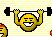

Smartphone version. The full version can be found here.
Click to listen to the Malay sentences.
A second reading (by Michelle Nor Ismat, a native speaker)
As important as verbs and nouns, adjectives are an integral part of any language's basic vocabulary. I have grouped the most common (and therefore important) ones here. These are adjectives that you are likely to use in a conversation with friends.
Actually you can consider this one lesson as the equivalent of three lessons so please take your time over it. Don't rush to the next lesson before you have memorized the new vocabulary here. I know there are lots of new words to be learnt off by heart here but these are the very basis of your Malay vocabulary so again give yourself plenty of time over this lesson.
To make matters worse, as you will see in the list of "Common Synonyms" below, it is not enough to learn just one Malay word for one English word because quite often there are two Malay words, one of which is used about 50% of the time and the other is used in the other 50%. And these are very, very common words, so there is no way you can escape by just learning one of the two words!
|
Banyak atau sedikit? (A lot or a little?) Rumahnya besar atau kecil? (Is his house big or small?) Bahasa Melayu senang atau susah? (Is the Malay language easy or difficult?) Bapanya gemuk atau kurus? (Is his father fat or thin?) If you can remember that banyak means "plenty of" or "a lot of" it is easy to remember that kebanyakan means "the majority of" or "most of" (whatever you are talking about). In our daily conversation how often do we need to say "most of" or "the majority of" so this word kebanyakan can come in really handy. A synonym of senang (= easy) that is frequently used in Indonesia as well as in Malaysia is mudah while Indonesians often use the word gampang eg. Itu gampang sekali! (Well that was easy!) or Berbicara itu gampang, yang sukar adalah mengerjakannya. (= It is easy to talk, what is difficult is to carry it out.) By the way mengerjakan is a good example of how a noun (in this case kerja meaning "work") can be turned into a transitive verb by adding the prefix me(N)- and the suffix -kan (this is a VERY difficult aspect of Malay) and a full explanation with examples are given in the appendix here. OTHER ADJECTIVES: tua (old - of age) muda (young) sedih (sad) - pronounce it as sə-day gembira (happy) kotor (dirty) bersih (clean) - pronounce it as bər-say jauh (far) - pronounce it as jar-oo dekat (near) kaya (rich) miskin (poor) lama (old - of things) baru (new) seronok (interesting) membosankan (boring)  kuat (strong)lemah (weak) sejuk (cold) panas (hot) betul (right) salah (wrong) cantik (pretty, beautiful) hodoh (ugly) basah (wet) kering (dry) panjang (long) pendek (short) The above pair of opposites is used for length eg. Dahulu rambutnya panjang tetapi sekarang rambutnya pendek. (Previously his hair was long but now his hair is short). tinggi (tall) pendek (short) The above pair of opposites is used to talk about the height of people eg. Emaknya pendek tetapi bapanya tinggi. (His/Her mother is short but his/her father is tall). tinggi (high) rendah (low) The above pair of opposites is used to describe buildings, trees, hills, tables, chairs etc. Example: Adakah Gunung Kinabalu lebih tinggi daripada Gunung Everest? Tidak, Gunung Kinabalu adalah lebih rendah daripada Gunung Everest. (Is Mount Kinabalu higher than Mount Everest? No, Mount Kinabalu is lower than Mount Everest). pandai (clever, intelligent) bodoh (stupid) (sebelah) kiri (left) (sebelah) kanan (right) (di) sana (there) (di) sini (here) sempit (narrow) lebar (wide, broad) - pronounce it as lay-bar, NOT lə-bar malu (shy) berani (bold, brave) lebih (more) - pronounce it as lə-bay kurang (less) When put together in the same order lebih kurang is translated exactly as in English i.e. "more or less" meaning "roughly" or "about". ketawa (laugh) menangis (cry) di atas (above, on) di bawah (below) And for the more courageous among you: teruja (excited) tidak bersemangat (unenthusiastic) |
VOCABULARY: atau = or banyak = a lot of baru = new basah = wet berani = bold, brave bersih = clean besar = big betul = correct bodoh = stupid cantik = pretty (handsome = kacak) dekat = near gembira = happy gemuk = fat hodoh = ugly jauh = far kacak = handsome kaya = rich kebanyakan = the majority kecil = small kering = dry kotor = dirty kuat = strong kurus = thin jauh = far lama = old lemah = weak malu = shy membosankan = boring miskin = poor muda = young panas = hot pandai = clever panjang = long pendek = short tinggi = high, tall rendah = low salah = wrong sedih = sad sedikit = a little sejuk = cold senang = easy seronok = interesting susah = difficult tinggi = tall tua = old |
TEST YOURSELF young = cold = poor = easy = clean = pretty = happy = clever = big = fat = rich = correct = long = far = near = dirty = plenty = wrong = small = high = stupid = little = interesting = thin = new = ugly = strong = old (of age) = tall = wet = low = weak = hot = dry = boring = shy = brave = sad = handsome = short = difficult = |
Just as we often have two words that mean exactly the same thing in English ("shut" and "close" being an example) so is the case with Malay. As both words are equally used in everyday conversation I'm afraid you will have to learn both of them. I have selected only the commonest ones here.
|
ENGLISH WORD arrive beautiful father friend to give good happy husband I important to like many meaning mother neighbour news no, not policeman return see stay thirsty tired tomorrow until wait wife window woman wrong |
MALAY WORD 1 sampai cantik bapa kawan memberi bagus gembira suami saya mustahak suka banyak makna, maksud emak jiran berita tidak (Lesson 37, 48) mata-mata balik nampak tinggal dahaga penat esok sampai tunggu isteri tingkap wanita salah |
MALAY WORD 2 tiba elok ayah sahabat bagi baik suka hati laki (informal use) aku (informal use) penting gemar ramai (used for people) erti ibu tetangga khabar bukan (Lesson 51) polis pulang lihat duduk haus letih besok hingga nanti bini (informal use) jendela perempuan silap |
Note that while ramai orang means "many people", when it is reversed and becomes orang ramai then it takes on a different meaning. In fact orang ramai means "the public". Examples:
Ramai orang berkumpul di dalam dewan itu untuk mendengar ucapannya. (= Many people gathered in the hall to hear his speech.)
Orang ramai bertepuk tangan apabila dia mulai bercakap. (= The public clapped their hands when he started to speak.)
Previous lesson Table of Contents Next lesson
This course is copyrighted and is not to be reproduced under any circumstances.